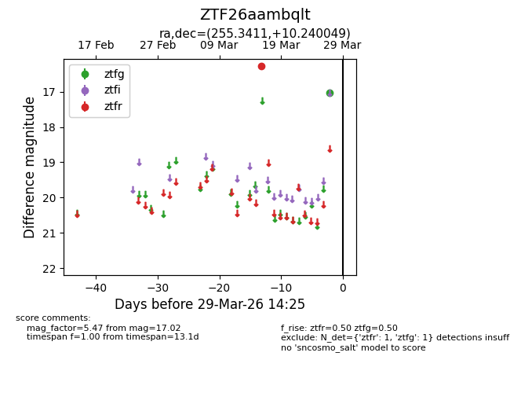
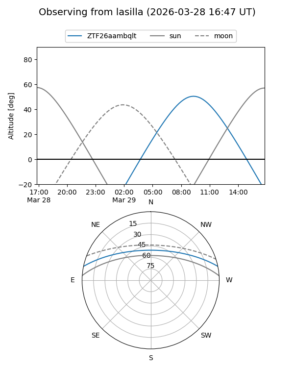
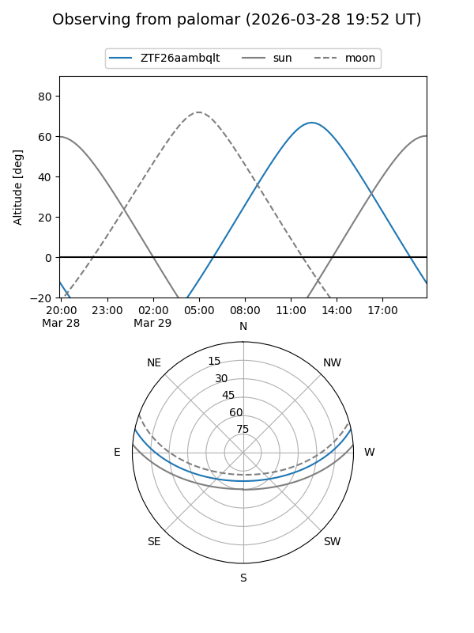

ZTF26aambqlt
Target ZTF26aambqlt at 2026-03-29 14:28
Aliases and brokers:
FINK: link
Lasair: link
ALeRCE: link
alt names
ZTF26aambqlt (ztf,fink_ztf)
Coordinates:
equatorial (ra, dec) = 255.3411,+10.24005
equatorial (HMS+DMS) = 17:01:21.86,+10:14:24.18
galactic (l, b) = (29.7113,+29.05938)
Flags:
Photometry:
last ztfg=17.02, ztfr=16.27
1 ztfg, 1 ztfr detections
Lightcurve

Visibility


Additional plots